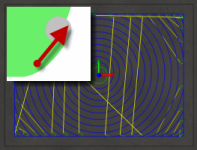
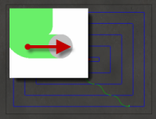

Précise la prise de passe axiale maximale.
|
REMARQUE: ce paramètre est DIFFÉRENT de ceux de charge optimale avec les trajectoires d'évidement adaptatif. Avec l'ébauche 2D hérité, l'outil voit toujours l'insertion de coupe complète entre deux passes.
 |
 |
Évidement adaptatif |
Évidement 2D hérité |